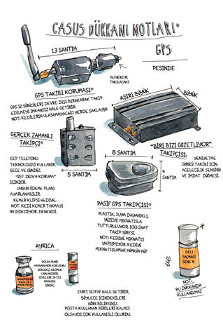
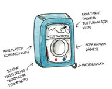
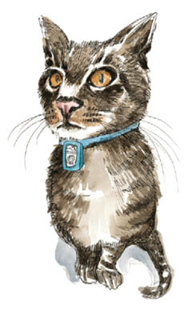
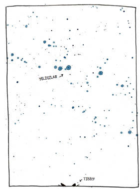

5
Tibby’nin İzinde operasyonu için atılacak ilk ve bariz adım, günah yuvasına kadar Tibby’yi takip etmekti.
Sıkılı dişlerimin arasından, “Günah yuvası,” dedim. Kafamda canlandırıyordum: Tibby altın rengi bir yastığın üstünde uyuyor, boş tonbalığı kutuları rom şişeleri gibi ortalığa dağılmış, genç kediler etrafta takılıyor. Hayalimde zırt pırt palmiye yaprağından devasa bir yelpaze hatırı sayılır dalgalar yaratarak yukarı aşağı sallanıyor, Tibby’nin güneş ışıklarının benekler oluşturduğu kürküne hafif bir esinti gönderiyordu.
“GÜ-NAH Yu-VA-sı,” dedim tekrar, vurguyu değiştirmiştim; sanki öyle yaparak yeni ve şaşırtıcı bir şey söylüyordum.
Wendy, “Şey,” dedi. “Beş hafta boyunca kaldığı yeri mi kastediyorsun? Oraya yeniden gideceğini nereden biliyorsun ki?”
Bilmiyordum. Emin değildim. Ama bazı işaretler vardı. Birincisi, Tibby evde yemek yemiyordu. Yine de kürkü parlaktı ve bir panterinkini andıran vücut ölçüleri yerindeydi. İkincisi, yüzünde gizli işler çevirip yakalanmamayı başaran bir kocanın o kendini beğenmiş, kibirli ifadesi vardı. O ifadeyi daha önce bizzat tecrübe etmemiştim, çünkü hiç kocam olmamıştı, ama televizyondaki One Life to Live ve As the World Turns pembe dizilerinde o kadar çok görmüştüm ki, şıp diye tanırdım.
“Bak,” dedim elimle işaret ederek. “Gördün mü?”
Wendy ona dikkatle baktı, ama göremedi.
Tabii o kıdemli bir kedi sahibi değildi, o nedenle anlayamaması normaldi.
“İnan bana,” dedim. “Tibby biraz aganiginin keyfini sürüyor.”
Yüzü, aganigi mi? dese de, Wendy başıyla onaylamakla yetindi, ilaç listeme kaçamak bakışlar attı ve başka bir şey söylemedi.
vWendy araştırma seferine yüzde yüz gönüllü değildi, ama karşı da koymayacaktı. Tibby ile Fibby’yi seviyordu. Ama onlarla bebek gibi konuşacak kadar sevmiyordu. Kedisel her cümlede “kedi” yerine “kedicik” diyecek kadar da sevmiyordu onları. Tibby’nin nereye ve neden gittiğine kafayı takacak kadar da. Ama seviyordu işte. O nedenle de yardım etmek istiyordu. İyi de bir kediyi nasıl takip edebilirsiniz? Kedi, evcil hayvanların en ele avuca sığmazıdır. Binlerce yıllık genetik kodlama onlara açelyaların arasına karışmayı, bahçe cücelerinin arkasında kıpırtısızca yatmayı, çitlerin üstünden süzülüp gitmeyi ve sinsice bankların altına sokulmayı öğretmiştir. O esnada, ben koltuk değneği kullanıp ağrı kesici içiyordum.
Wendy düşünceli düşünceli, “Onun gittiği yere biz gidemeyiz,” dedi. “Ama teknoloji gidebilir.”
İşte bu yüzden çok geçmeden kendimi bir “casus dükkanında,” aslında video kamera olan kağıt mendil kutularıyla dolu rafların, ses kayıt cihazı olan dolmakalemlerin, pirinç muştaların, şok tabancalarının, testere dişli kocaman düello bıçaklarının yanından topallayarak geçerken buldum. Başka zaman olsa bu cephane zımbırtıları merakımı uyandırırdı, ama bugün değil. Bugün özel bir vazifem vardı.
Sivilceli suratlı genç dükkan çalışanına, “Takip cihazına ihtiyacım var,” dedim. “Anlarsınız işte, izleyen bir şeye.”
Çalışan, tembel bir edayla, “Onlardan var elimizde,” dedi. Sanki benden önce bir milyon ihanete uğramış kadın gelmişti oraya. “Size GPS lazım, yani küresel konumlandırma sistemi.” Uzaktaki duvara dayanmış bir camlı dolabı gösterdi ve onu izlemem için eliyle işaret etti.
Yanına gittiğimiz camlı dolap, akvaryum gibi ışıklandırılmıştı; içinde de antenlerle, ekranlarla, mıknatıslarla ve bağlama kayışlarıyla donatılmış her büyüklükte ve her biçimde GPS cihazı yüzüyordu. İnsanın eşinin cüzdanına bırakıvereceği GPS cihazları da vardı, zırhlı araç soygunu durumunda para torbalarının içine yerleştirilebilecek olanları da. Bilgilendirici etiketlerde uzun model numaralarının yanı sıra “tek tıkla uydu bağlantısı”, “entegre anten” ve “harici bellek” vaatleri yer alıyordu. Genç çalışan, ağır görünümlü koca bir kutuyu raftaki yerinden alarak saygıyla bana uzattı.

“Yetmiş iki saat pil ömrü, internet sitesinden canlı takip ve tutturmak için mıknatıs,” diye açıkladı. Fiyat etiketine bir göz attım. 1500 dolar.
“Ben biraz daha ucuz bir şey arıyorum,” dedim ve dolaba doğru sendeledim. “Bir de küçük olması lazım. Çok küçük.”
Ama bana gösterdiği bütün GPS cihazları çok büyüktü.
Delikanlı son cihazı da kaldırırken, “Cihazı ne amaçla kullanacağınızı bilirsem size daha iyi yardımcı olabilirim,” dedi. Sesi hassas durumlar için eğitilmiş olanların tarafsız tonunu korusa da gözleri onu ele veriyordu. Gözleri koltuk değneklerimde gezinip kafamdaki yaraya çıkıyor, oradan da yeniden bacağımdaki kocaman alçıya iniyordu. Ne düşündüğünü biliyordum. Kötü erkek arkadaş? Dayakçı koca? Metresle bir yüzleşme?
Boğazımı temizledim.
“Şey,” dedim. “Yani…”
Çocuk beklentiyle bana baktı.
Sonunda, “Anlayacağınız,” demeyi başardım. “Kedimi takip etmem gerekiyor.”
Görevli başta anlamadı. Herhalde fısıldayarak konuştuğum için.
“Kedi,” dedim. “K-E-D-İ.”
Boş bakışlar.
“Bunu çok kısa boylu ve aşırı tüylü bir kocayı takip etmek olarak düşünün,” dedim.
Derken görevlinin gözleri parladı. “Kedi!” Burada, casus dükkanında çok hikaye dinlemişti, ama bunu daha önce hiç duymamıştı. “Vay canına! Ah, evet! Şey, internete bakın,” diye bağırdı. “Orada bir sürü cihaz var. Kedi için de bir şey bulunacağına eminim. Mutlaka vardır.”
Yeni dostum haklı çıktı. Kabataslak çizimlerle dolu, güç anlaşılır bir İngilizceyle yazılmış bir internet sitesinde nihayet çok küçük bir GPS cihazı buldum. Bir adam garajında yapıyordu bunları. Kediler için.
Demek ki bu adam yalnızca azimli bir mühendis değildi, aynı zamanda ruh ikizimdi.
Siparişi verdim.

Kedi Takipçisi geldi. Mavi kauçuktan bir kabın içine yerleştirilmiş, sağlam görünüşlü, beyaz, küp şeklinde bir plastikti. Cadılar Bayramı şekerlemesinden çok az daha büyük, iki kat daha ağırdı; onun kadar da derli toplu, sade bir görüntüsü vardı. 20 gram ağırlığıyla casus dükkanındaki herhangi bir cihaza göre en azından üçte bir oranında daha hafifti. Ön tarafta bir düğme ve çeşitli şekillerde göz kırpan, elimizdekinin ortalama büyüklükteki herhangi bir memeli beynini yaya bırakabilecek çetrefilli bir cihaz olduğu konusunda bize güvence veren iki de ışık vardı. Biri kırmızı, biri de mavi. Tibby’yi aramaya koyulduk.
Tibby halıya yayılmış horluyordu. Wendy ile beni görünce başını kaldırdı; kocaman sahte gülümsemelerimizden ve ağır çekim hareketlerle yaklaşmamızdan, mırıldandığımız saçma sapan sözlerden, tavana, duvara, ondan başka her yere bakmamızdan şüphelenmedi. Ona ne kadar güzel, ne kadar akıllı, ne kadar harika bir kedicik olduğunu söyledim. Cihaz en ufak bir aksilik çıkmadan tasmasına takıldı.
Tibby değişmişti. Artık yarı kedi, yarı astronottu; yanıp sönen kırmızı-mavi ışıkları bıyıklarını aydınlatan bir gösterge tablosu boynundan sarkıyordu. Wendy ile bakışıp birbirimizi sessizce tebrik ettik, sonra Tibby’ye dikkatle baktık. Tuhaf bir şey olduğunu fark edecek miydi? Ama kedim istifini bozmamıştı, bize muhabbetle bakıyordu.
Bu mühim anı kayıt altına almak için birkaç fotoğraf çektim.
Tibby ayağa kalkıp gerindi.

Kapıya doğru gitti.
Eşikte durakladı, sonra koridor boyunca ilerleyip salına salına merdivenlerden aşağı yöneldi.
“Tamam,” dedim. Çocuğunu anaokulundaki ilk gününe yollayan ana-babalar gibi gururlu ve perişan halde orada durduk.
Tibby’nin kuyruğu aşağıda gözden kaybolurken, “Şimdi ne yapıyoruz?” dedim.
Wendy, “Bekliyoruz,” diye cevap verdi.
